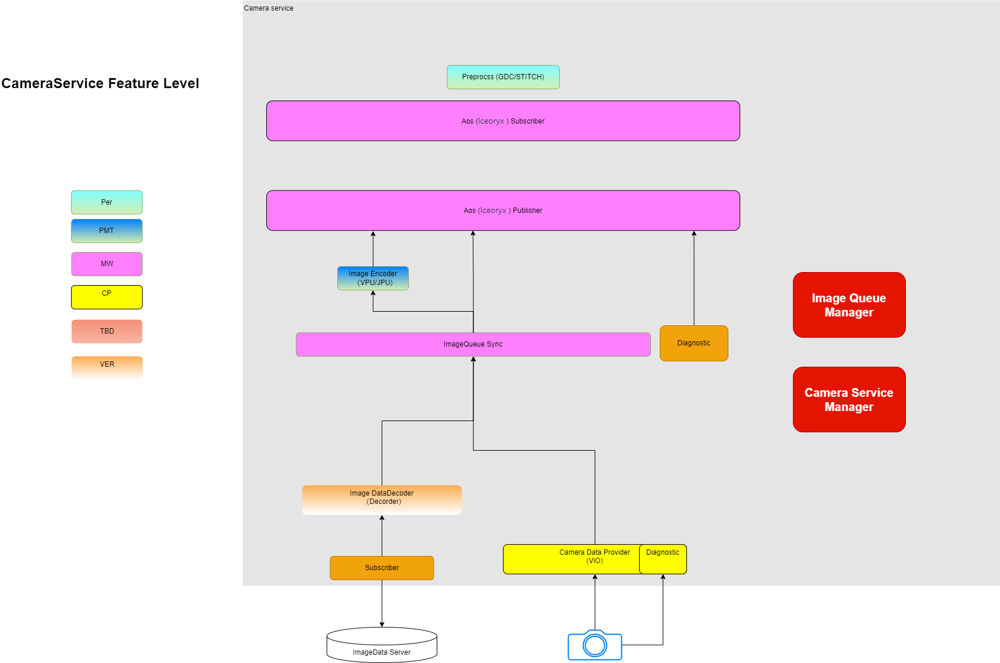
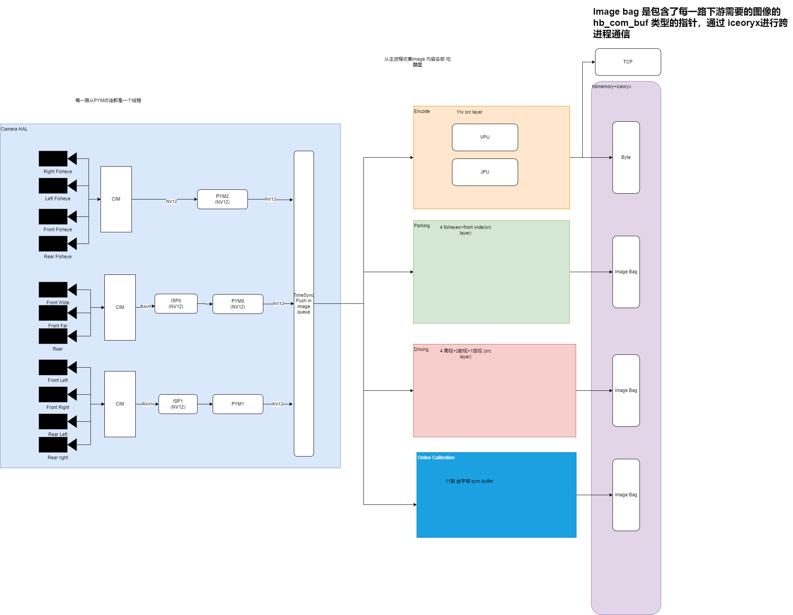
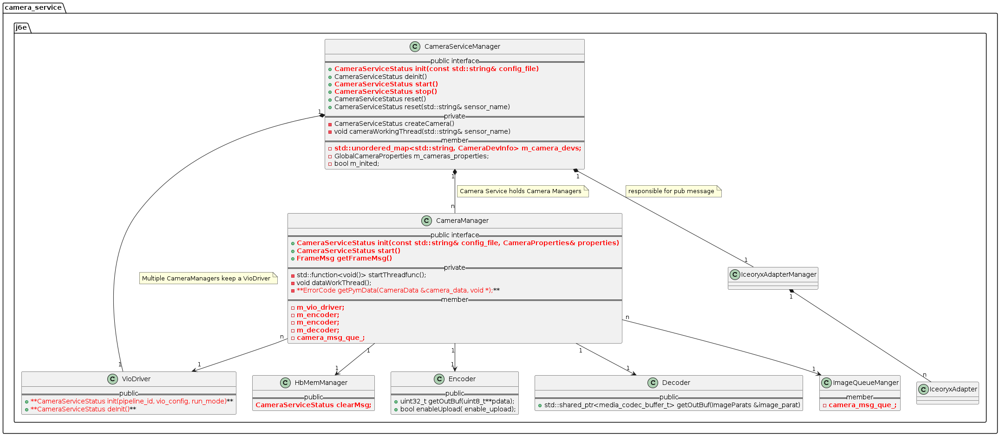
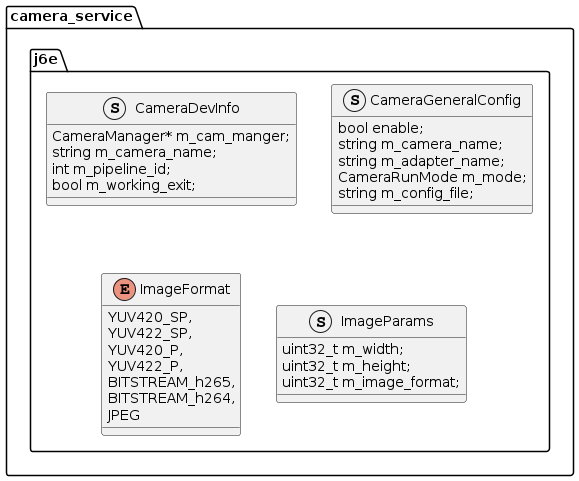

Camera Service Arch Design
Architecture
Function Architecture
For J6E -specific platforms, Camera Service should have the following functions, and the internal division of the sub -module is as follows. Camera Service design is temporarily considering the universality of other platforms.
|
Module name |
Function |
|
Vio Driver |
1. Initialize VIO configuration (vio.json/cim.json) 4. Support hardware status query 5. Support internal reference, SN read |
|
Image Encoder |
1. Support to encode the multi -way input image (H264/JPEG) |
|
Image Decoder |
1. Support the multi -way back irrigation image (H264/JPEG) |
|
Subscriber |
Subscribe to external data stream |
|
Diagnostic |
1. Provide Error Handler framework for each submissive |
|
ImageQueueManager |
1. Support multi -way camera timestamp alignment |
|
Iceoryx Publisher |
1. Support publishing image messages (HBMEM +IceoryX) |
|
Iceoryx Subscriber |
1. Support accepting image messages (HBMEM+IceoryX) |
|
Camera Service Manager |
1. Support the entire Camera Service Function, responsible for calling the interface of each module |

Data flow diagram
online

Class Diagram
Overall structure diagram
Camera_service :: j6e :: xx 
Structure definition

storehouse
Storehouse address
https://sourcecode01.de.bosch.com/projects/MIDDLETRIM_XCCN/repos/camera_service/browse
Directory Structure
|-- camera_service| |-- adapter| |-- camera| |-- camera_manager| |-- decoder| |-- encoder| |-- paramter_manager| |-- sa| |-- utils| `-- vio_driver|-- cmake|-- common|-- config| |-- camera_service| | |-- adapter| | `-- camera| `-- image_preprocess|-- examples| `-- aos_adapter| |-- basic_sample| |-- common| `-- graphic_sample|-- image_preprocess|-- scripts|-- third_party`-- unit_test `-- aos_adapterCompile
J5 Compile
refer to camera_service Readme
Iceory related conan bag needs to be taken as follows.
\\bosch.com\dfsrb\DfsCN\DIV\XC\Engineering\domain\WAVE3\00_DataExchange2\to_huidong
If you encounter an error in PIP Install, please refer to the following documents.